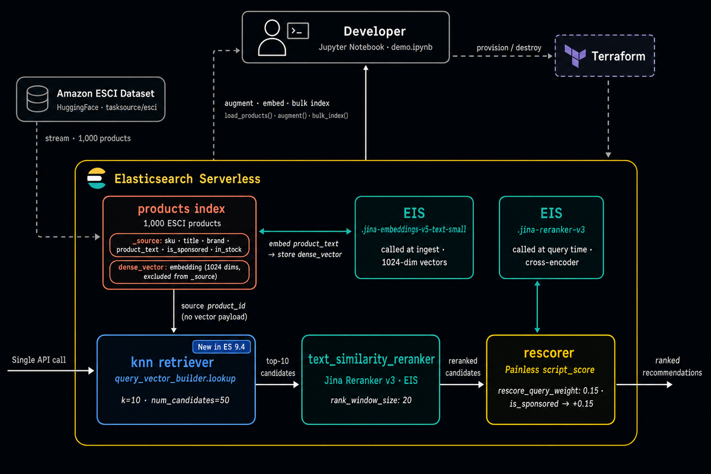
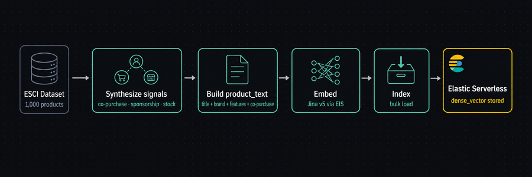
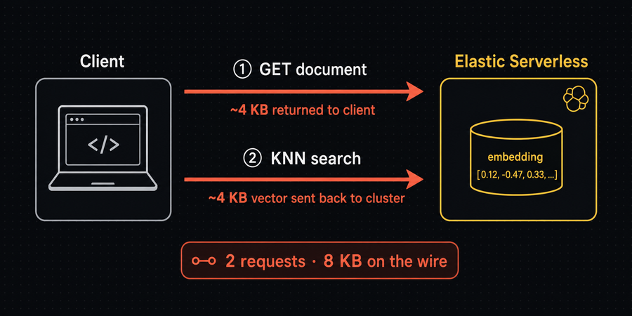
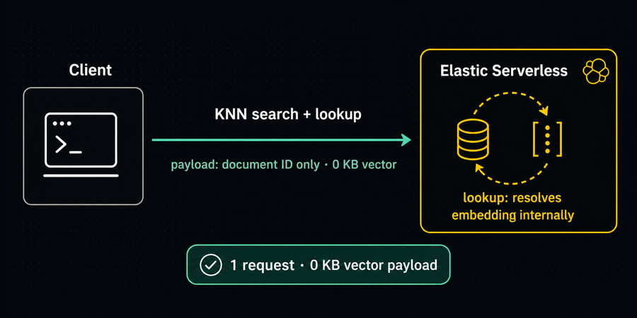

query_vector_builder.lookup collapses KNN search, reranking, and business logic into a single Elasticsearch API call.
A production recommendation engine on Elasticsearch Serverless 9.4 · Solutions Engineering Demo
The Business Case
Recommendations drive revenue — but latency and complexity tax every call
"Customers who viewed this also bought…" is core to cart size and conversion.
Stored-vector recommendations traditionally need two round trips per request — fetch the vector, then search with it.
At scale, that doubles network payload and latency for a result the cluster already holds.
Relevance also needs business signals — sponsorship, stock, co-purchase — without bolting on a second system.
Today's Demo
Three approaches to the same query "find products similar to this one" — on 1,000 real Amazon products
BEFORE
Two round trips
The traditional stored-vector pattern. Vector crosses the network twice.
AFTER
Single request
lookup resolves the vector server-side. Identical results, zero vector payload.
FULL PIPELINE
+ Rerank + Boost
Jina Reranker v3 and a sponsorship boost — all in one call.
Architecture
One platform, end to end

Provisioned with Terraform · embeddings & reranking via Elastic Inference Service · serving over a single Serverless endpoint.
Data Ingestion
From raw products to searchable vectors

Synthesize behavioral signals → build product_text → embed with Jina v5 via EIS → bulk index. Co-purchase affinity is baked into the embedding, not bolted on after.
The Before
Two round trips — the vector pays the toll twice

2
network requests
~8 KB
vector on the wire
GET embedding → send it right back in the KNN bodyThe After · ES 9.4
query_vector_builder.lookup

1
network request
0 KB
vector payload
Client sends only a document ID — the cluster resolves its own vectorDrop-in Replacement
Two requests become one — same KNN, same results
BEFORE · 2 requests
# 1. fetch the stored vector
doc = es.get(index=INDEX, id=sku,
_source_includes=["embedding"])
vec = doc["_source"]["embedding"]
# 2. send it back in the search
es.search(index=INDEX, body={
"knn": {
"field": "embedding",
"query_vector": vec # ~4KB
}
})